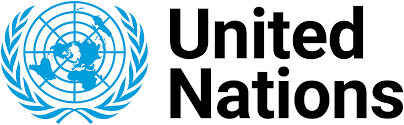
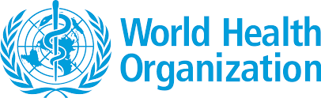

Kerja sama internasional adalah bentuk kolaborasi antara dua atau lebih negara yang bertujuan untuk mencapai kepentingan bersama, mengatasi tantangan global, dan memperkuat hubungan di berbagai sektor, seperti ekonomi, politik, sosial, dan budaya. Bentuk kerja sama ini dapat bersifat bilateral, multilateral, atau regional, dengan fokus pada peningkatan kesejahteraan bersama, penanganan isu global seperti perubahan iklim dan perdamaian, serta mempererat hubungan antarbangsa.
Manfaat kerja sama internasional mencakup terciptanya perdamaian, stabilitas, dan kemajuan ekonomi. Namun, tantangan yang dihadapi meliputi perbedaan kepentingan, ketimpangan sumber daya, dan persoalan kedaulatan. Organisasi seperti Perserikatan Bangsa-Bangsa (PBB), Organisasi Perdagangan Dunia (WTO), dan ASEAN menjadi platform utama untuk mendukung dan memfasilitasi kerja sama ini. Contoh kerja sama internasional meliputi inisiatif untuk mengatasi perubahan iklim, perdagangan bebas, dan upaya menjaga perdamaian dunia.
Perserikatan Bangsa-Bangsa (PBB):
Organisasi yang mempromosikan perdamaian, hak asasi manusia, dan pembangunan global. Contohnya adalah Misi Perdamaian PBB untuk meredakan konflik di negara-negara yang sedang perang.
World Health Organization (WHO):
Koordinasi global untuk mengatasi pandemi COVID-19, seperti distribusi vaksin melalui program COVAX.
